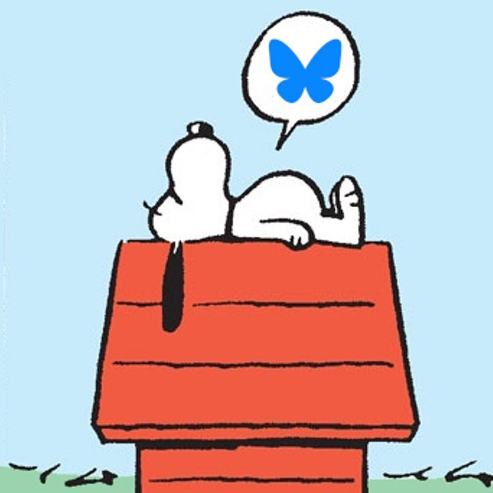
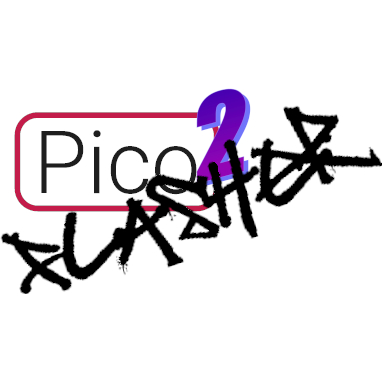
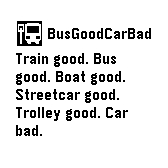
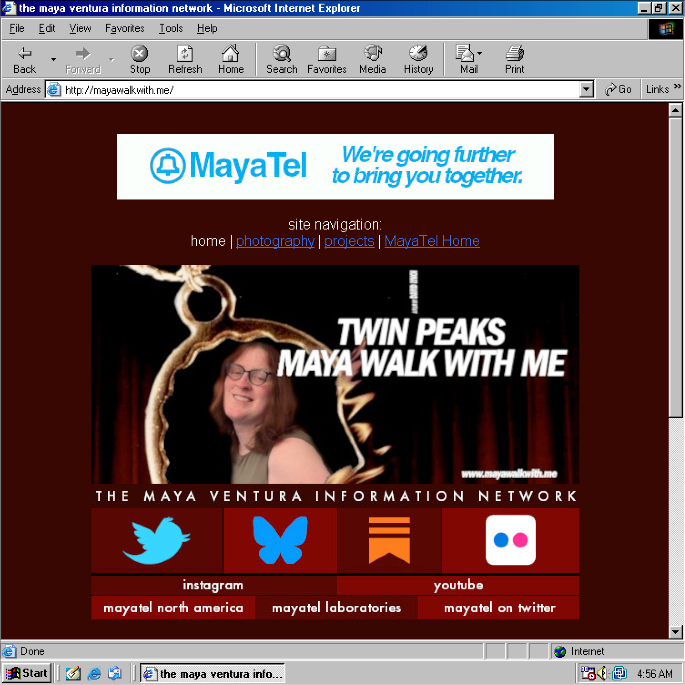

home | photography | projects | MayaTel Home
projects
they call me a jerk of all trades...no, wait, the other one
 esnupi.me
created November 25th, 2025. online November 26th. 1.0 release December 1st, 2025.
Bluesky bot that posts a single strip from Charles Schulz's Peanuts (1950 - 2000) and also its predecessor strip, Li'l Folks (1947 - 1950).
Highly, highly altered fork (as in 0% of shared main code and image parsing code) of an existing Bluesky image bot by Jason Prado.
The collection of images assembled for this project is the only complete collection of Peanuts in an archival format on the internet.
100% TypeScript.
TWWbot-JS
created November 28th, 2025. online November 28th. 1.0 release January 5th, 2026.
Bluesky bot that posts every frame from Aaron Sorkin's The West Wing in order.
Also a fork of Jason Prado's bsky-image-bot, also very drastically different from the original.
Includes new code to parse multiple pieces of information (season, episode, current frame, total frames, episode title) based on nothing but filenames.
100% TypeScript. Reboot of an earlier, Python-based Twitter bot.
Does not constitute an endorsement of the show's politics - we're fans of socialism around here.
 Pico2Flasher
forked January 3rd, 2026. stable release same day.
Software to allow you to flash Xbox 360 NANDs using Pico 2 boards.
Fork of the existing PicoFlasher software, targeted for the now-more-immediately-available Pico 2 hardware.
Uses 15432's version of PicoFlasher, which allows you to flash any 360 (including 4GB Corona boards) via the SPI header instead of the goofy-ass NAND header.
Mostly C, with some minor Python components.
 HRTminder
HRTminder1.0 release January 8th, 2026.
Pebble watchface for the terminally forgetful.
Yells at you to take your HRT.
About 50/50 split between C and JavaScript.
GitHub | Rebble store
 BusGoodCarBad
forked January 10th, 2026. working release published January 14th, 2026.
Pebble app that tells you about your bus.
Forked from Yaoyu Yang's CatchOneBus.
All of the work I did was on the JavaScript side.
GitHub | Rebble store
 mayawalkwith.me
online March 22nd, 2025.
hello
GitHub | no points for guessing where this goes
© maya ventura
This webpage was last updated on January 14th, 2026. Hosted on Github Pages. All original content is licensed under the MayaTel Labs Software License.